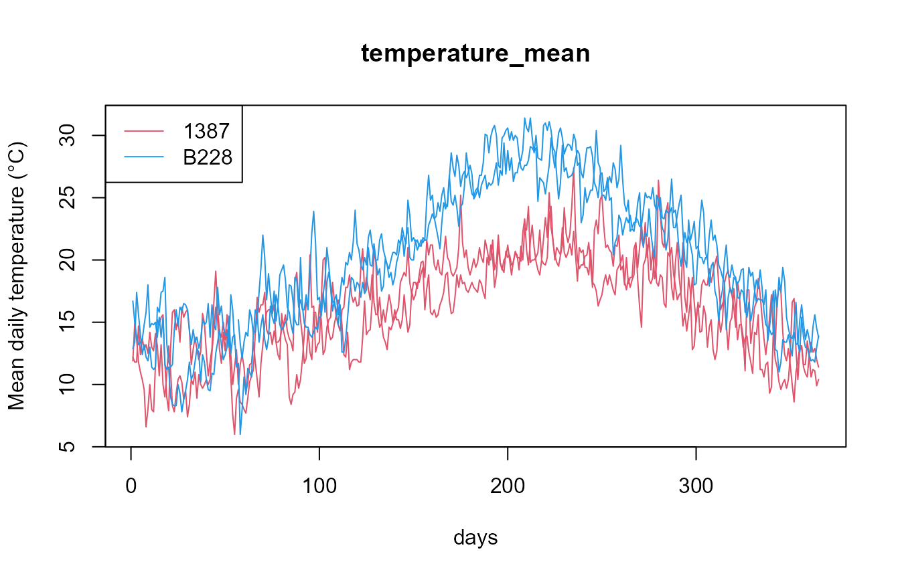
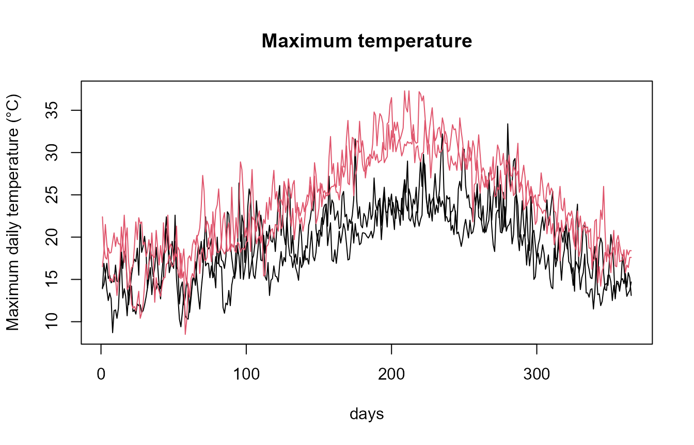
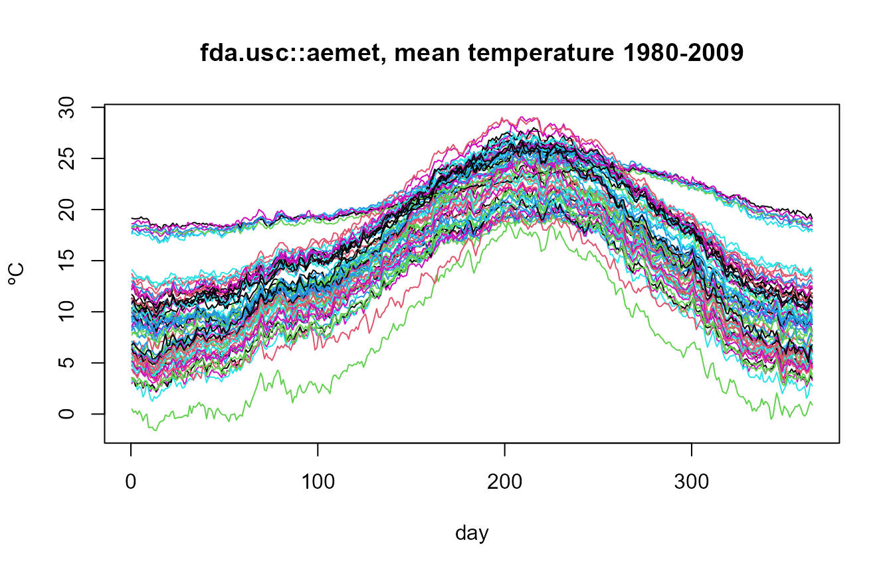

Overview
This vignette illustrates a complete workflow to download daily meteorological data from AEMET OpenData and convert them into functional data objects of the fda.usc package using aemet2fdata.
- AEMET OpenData portal: https://opendata.aemet.es/centrodedescargas/inicio
- API key request: https://opendata.aemet.es/centrodedescargas/altaUsuario
Every functional object has one curve per station and
year with 365 points (argvals = 1:365). February
29 is removed, so column 60 is always March 1. Missing days are kept as
NA.
1. Example without API key
The package ships daily data of two stations (1387, A Coruña, and
B228, Palma Puerto) for 2023-2024. The same code works with a file saved
by aemet2df(..., file = "mydata.csv").
library(aemet2fdata)
library(fda.usc)
#> Loading required package: fda
#> Loading required package: splines
#> Loading required package: fds
#> Loading required package: rainbow
#> Loading required package: MASS
#> Warning: package 'MASS' was built under R version 4.6.1
#> Loading required package: pcaPP
#> Loading required package: RCurl
#> Warning: package 'RCurl' was built under R version 4.6.1
#> Loading required package: deSolve
#>
#> Attaching package: 'fda'
#> The following object is masked from 'package:graphics':
#>
#> matplot
#> The following object is masked from 'package:datasets':
#>
#> gait
#> Loading required package: mgcv
#> Loading required package: nlme
#> Warning: package 'nlme' was built under R version 4.6.1
#> This is mgcv 1.9-4. For overview type '?mgcv'.
#> Loading required package: knitr
#> Warning: package 'knitr' was built under R version 4.6.1
#> fda.usc is running sequentially usign foreach package
#> Please, execute ops.fda.usc() once to run in local parallel mode
#> Deprecated functions: min.basis, min.np, anova.hetero, anova.onefactor, anova.RPm
#> New functions: optim.basis, optim.np, fanova.hetero, fanova.onefactor, fanova.RPm
#> ----------------------------------------------------------------------------------
f <- system.file("extdata", "aemet_example.csv", package = "aemet2fdata")One variable: fdata
fd_tmed <- aemet2fdata(file = f, var = "tmed")
dim(fd_tmed)
#> [1] 4 365
rownames(fd_tmed$data)
#> [1] "1387_2023" "1387_2024" "B228_2023" "B228_2024"
plot(fd_tmed, col = rep(c(2, 4), each = 2))
legend("topleft", legend = c("1387", "B228"), col = c(2, 4), lty = 1)
The usual fda.usc tools apply directly:
Several variables: ldata
aemet2lfdata() returns an ldata object:
df has one row per curve (station-year) with the station
metadata, and there is one fdata per variable, all with the
same rows.
ld <- aemet2lfdata(file = f, vars = c("tmed", "tmax", "tmin", "prec"))
#> Station coordinates (lon, lat) not available: pass 'inventory' (see aemet2inventory()) or 'api_key'.
names(ld)
#> [1] "df" "tmed" "tmax" "tmin" "prec"
sapply(ld, NROW)
#> df tmed tmax tmin prec
#> 4 4 4 4 4
ld$df
#> station_id station_name province altitude lon lat wmo_id year
#> 1387_2023 1387 A CORUÑA A CORUÑA 57 NA NA <NA> 2023
#> 1387_2024 1387 A CORUÑA A CORUÑA 57 NA NA <NA> 2024
#> B228_2023 B228 PALMA, PUERTO ILLES BALEARS 3 NA NA <NA> 2023
#> B228_2024 B228 PALMA, PUERTO ILLES BALEARS 3 NA NA <NA> 2024
#> n_days
#> 1387_2023 365
#> 1387_2024 365
#> B228_2023 365
#> B228_2024 365
is.ldata(ld)
#> [1] TRUESubsets and plots use the ldata methods of
fda.usc:
ld_coruna <- subset(ld, ld$df$station_id == "1387")
sapply(ld_coruna, NROW)
#> df tmed tmax tmin prec
#> 2 2 2 2 2
plot(ld$tmax, col = as.integer(factor(ld$df$station_id)),
main = "Maximum temperature")
2. Downloading from the API
api_key <- Sys.getenv("AEMET_API_KEY")Station inventory
aemet2inventory() returns one row per station with
station_id, station_name,
province, altitude (m), lon,
lat (decimal degrees) and wmo_id. Save it once
and reuse it: the daily data do not include coordinates, so the
inventory is what provides lon and lat in
ldata$df.
inv <- aemet2inventory(api_key = api_key, file = "inventory.rds")
head(inv)Functional objects
ld <- aemet2lfdata(file = "mydata.csv", inventory = "inventory.rds")
ld$df
plot(ld)
# or directly from the API
ld <- aemet2lfdata(
station_ids = c("1387", "B228"),
vars = c("tmed", "prec"),
start_date = "2018-01-01",
end_date = "2020-12-31",
api_key = api_key,
inventory = inv
)One station, whole history: aemet2csv()
aemet2csv() requests each station in half-year windows
(1 January-30 June and 1 July-31 December, i.e. two requests per year),
from the most recent backwards, and writes one CSV per
station with its whole daily history. The CSV is written in
UTF-8 whatever the locale, so station names with accents or “ñ” are
kept. Stations already downloaded are skipped, so an interrupted run is
resumed by running the same call again.
log <- aemet2csv(c("1387"), start_date = "2006-01-01",
end_date = "2025-12-31", api_key = api_key,
out_dir = "aemet_csv")
log
ld <- aemet2lfdata(file = "aemet_csv/1387.csv",
vars = c("tmed", "tmin", "tmax", "prec", "sol"),
inventory = "inventory.rds")
ld <- subset(ld, ld$df$n_days >= 365) # complete years
plot(ld$tmed, col = hcl.colors(nrow(ld$df), "Blue-Red 3"))All stations over long periods
For many stations and years use aemet2download(): it
requests all stations at once (AEMET todasestaciones
service) in short windows and, when a year is complete, saves
one file per station and year
(aemet_daily/1387/1387_1976.rds, …). It is resumable: run
the same call again to continue or to retry failed windows. Then pass
the directory to aemet2lfdata() (optionally with
station_ids to read only some stations).
log <- aemet2download(
start_date = "2006-01-01",
end_date = "2025-12-31",
api_key = api_key,
out_dir = "aemet_daily",
vars = c("tmed", "tmin", "tmax", "prec", "sol")
)
table(log$status)
ld <- aemet2lfdata(file = "aemet_daily", inventory = "inventory.rds")
table(ld$df$year)
# complete years (>= 360 days) of stations with the 50 years
ld <- subset(ld, ld$df$n_days >= 360)
ny <- table(ld$df$station_id)
ld50 <- subset(ld, ld$df$station_id %in% names(ny)[ny == 50])Station identifiers are station_id (AEMET
indicativo, e.g. "1387"), not
wmo_id.
3. Built-in dataset from fda.usc
fda.usc includes the dataset aemet (73
stations, averages 1980-2009):
data(aemet)
names(aemet)
#> [1] "df" "temp" "wind.speed" "logprec"
plot(aemet$temp, main = "fda.usc::aemet, mean temperature 1980-2009")
It is a climatological (averaged) version, with one curve per station, whereas aemet2fdata gives one curve per station and year.
4. Recommended workflow for large downloads
- Download the inventory once:
aemet2inventory(api_key, file = "inventory.rds"). - Download data once:
aemet2csv()(some stations, whole history),aemet2download()(all stations) oraemet2df(..., file = "mydata.csv"). - Build functional objects from the files:
aemet2lfdata(file = "mydata.csv", inventory = "inventory.rds").
This avoids repeated API calls and respects the AEMET OpenData service.
Related packages
climaemet and meteospain also access AEMET OpenData: the first covers many AEMET services with tidy/spatial output and climate graphics, the second several Spanish meteorological services with a common format. aemet2fdata focuses on long daily series stored locally and on their conversion into functional data for fda.usc. Data source: © AEMET.